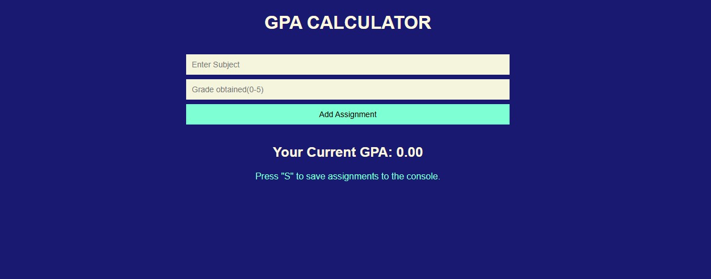

Grade Calculator
This is a web app that I built to help me calculate my grades and keep track with my GPA.
I created the HTML and CSS codes for the web app.
Visit AppNexus Irrigation System
It is a system that helps farmers to control time for irrigation and get information of their crops.
View PrototypeSmart Parking Management System
A full-stack web application for managing parking spaces, reservations, and payments. The system supports two types of users: Drivers (who book parking spots) and Parking Operators (who manage parking spots).
I worked on the backend of the application using Python(FLASK), REST API and the database using MYSQL
View PrototypeYAN web platform
This is a platform that I worked on for an organization called Youth Advocates Network(YAN).
It will help YAN to give trainings, assignments and track the performances of its members.
Applicants can apply to join YAN via the platform and the committee will be able to view their applications, accept or reject the applications.
I worked on the Frontend of the platform, I used HTML, CSS for styling and JavaScript for interactivity of the platform and integration with the backend.
View PrototypeKivu Appointment And Queue Management System
This is a personal project of mine that I am working on that will help patients to book appointments in hospitals.
It will allow the Doctors, Nurses and Receptionists at the hospital to know patients they have for the day.
Doctors can set days that they will be available for consultations in the hospital.
Patients can book appointments based on the available dates set by doctors and can choose time of their appointments.
I worked on both the Frontend and backend of the System. On the fronted I used HTML, CSS for styling and JavaScript for interactivity of the platform.
On the backend, I used Python, REST API and MYSQL for the database.